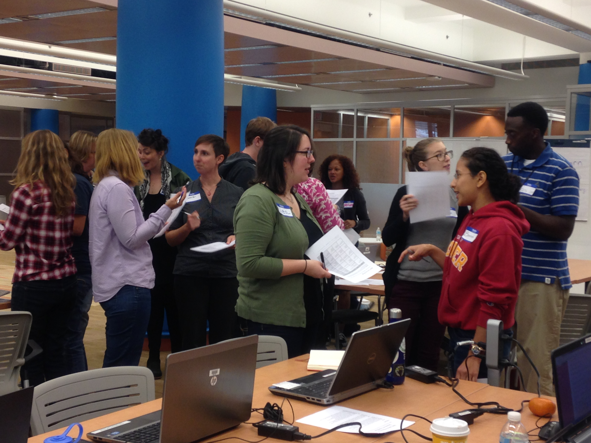

Apresentação Rápida sobre as Mecânicas da Web
20 minutos
Mecânica da Web é uma combinação de ferramentas, características e funções que determinam como usamos a Internet. Compreender a mecânica da web nos ajuda a proteger as informações pessoais on-line, a utilizar e a compreender URLs, endereços IP, termos de pesquisa, marcadores e muito mais. Esta atividade irá introduzir os conceitos básicos de mecânica da web através de uma atividade off-line, em grupo. Esta atividade pode ser adaptada para todas as idades.
Atividade 1 de 6
Ler e Participar da Web
Habilidades do Século 21
ComunicaçãoHabilidades de Alfabetização Web
Navegar ProtegerObjetivos de aprendizado
- Conhecer e compreender o vocabulário da mecânica da web relacionado à navegação on-line e à proteção de informações pessoais.
- Criar comunidade entre os participantes do evento.
Público alvo
- 13+
- Usuários iniciantes da web
Materiais
- Canetas/Marcadores
- Papel
- Cronômetro
-
Preparação
Crie cartões de nome: Crie cartões de nome para cada uma das mecânicas da web listadas abaixo. Cada cartão tem dois lados. Escreva o nome da mecânica da web na frente (exemplo: Cookies). Escreva a descrição da mecânica da web em algumas frases na parte de trás (exemplo: "Eu sou um pequeno pedaço de texto enviado para seu navegador por um site."). Você pode fazer esses cartões por conta própria antes que a atividade comece ou peça aos participantes para ajudar a confeccionar os cartões.
- Cookies: Eu sou um pequeno pedaço de texto enviado para o seu navegador por um site.
- Bandwidth: Eu sou um atalho eletrônico que conecta a Internet ao seu computador. Se me aumentar irá permite uma ligação à Internet mais rápida.
- Bookmarks: No contexto da Web mundial (World Wide Web), eu sou um identificador que é armazenado para posterior recuperação.
- Linguagens de desenvolvimento web: Eu digo aos navegadores web como estruturar e apresentar conteúdo em uma página da web.
- URL: Eu sou uma cadeia de caracteres específica que constitui uma referência a um recurso (ex. uma página web).
- Configurações de Privacidade: Permito que as pessoas que utilizam a web determinem várias formas de acesso às suas informações.
- IP: Eu sou um rótulo numérico atribuído a cada dispositivo que participa de uma rede de computadores. Eu também sou conhecido como Protocolo de Internet.
- Navegador: Eu sou um aplicativo de software para apresentar, recuperar e navegar através de páginas de informações na Web.
Participantes: Como seus participantes são novos nas Mecânicas da Web, é preciso descobrir uma maneira de apresentar o que é isso, e como funciona. Isso pode acontecer na forma de uma discussão, um plano de aula, um questionário com Perguntas & Respostas, etc. Os participantes devem reapresentar as mecânicas em seus cartões e agir como se estivessem encontrando outras mecânicas da web. Dessa forma, os alunos podem ensinar uns aos outros seus mecanismos de web assim como eles se apresentam um ao outro. O objetivo é que todos se sintam confortáveis com a discussão dos componentes da mecânica web uma vez que a atividade começar.
-
Atividade
15 minutosApresente a Atividade: Reúna todos os que participarão da atividade. Cada pessoa receberá um cartão. Peça aos participantes para tomar um pouco de tempo para ler a frente e o verso do cartão que receberam. Todo mundo está fingindo ser o mecânico web listado no seu cartão. Uma vez que a atividade começar, eles terão dois minutos para aprender sobre os outros mecânicos da web na sala.
Inicie a atividade: Defina um temporizador para intervalos de 2 minutos. Inicie o relógio e diga a todos que se juntem rapidamente com outra pessoa (funciona melhor com um número par de participantes, mas um número ímpar pode funcionar também). Eles têm dois minutos para se apresentarem uns aos outros e perguntar qualquer uma das questões curtas abaixo. Após os dois minutos peça à eles para encontrar outra pessoa e fazer a mesma coisa. Continue até que todos tenham tido a chance de conhecer todos os outros participantes.
- O que você faz?
- Quais são seus amigos?
- Como nos conectamos?
- Quantos anos você tem?
- De onde você é?
-
Reflexão
5 minutosApós a atividade reúna todos em um círculo e peça para discutirem a atividade. Peça que descrevam quaisquer desafios, momentos engraçados ou coisas interessantes que aprenderam.